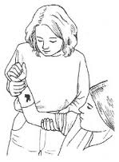
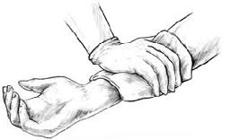
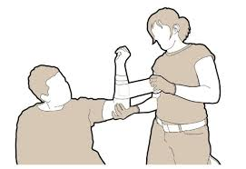

Bleeding
Treatment
Act quickly:
Have victim lie down. Elevate injured limb higher than heart unless you suspect a brokenbone.

Apply direct pressure to the wound with a sterile pad or clean cloth

If bleeding is controlled by direct pressure:
Bandage firmly to protect wound and check pulse to be sure bandage is not too tight.

If bleeding is not controlled by use of direct pressure:
Apply a tourniquet only as a last resort
Get professional medical assistance immediately
If you are bleeding and have no one to help:
- call for professional medical help.
- Lie down, so your body weight applies pressure to the bleeding site.